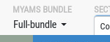
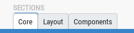
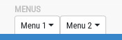
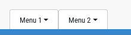

Top tabs and menus can be hidden on mobile devices for several screen resolutions; so always take care to use these features carefully if mobile devices are a priority for your applications!
These menus are not mandatory; they are quite application specific and can be used, for example, to store a set of shortcuts links; but anything that can be included into a dropdown menu can be integrated here!

HTML code is formatted like this:
<div class="top-menu d-flex flex-column px-3 py-1"> <span class="label">MyAMS bundle</span> <span class="btn btn-sm dropdown-toggle" data-toggle="dropdown"> <span class="title">Full-bundle</span> </span> <span class="dropdown-menu"> <a href="index.html" class="dropdown-item">Full bundle</a> <a href="index-mini.html" class="dropdown-item">Mini bundle</a> <a href="index-core.html" class="dropdown-item">Core bundle</a> </span> </div>
These tabs are also very application specific; they are generally associated with MyAMS click handlers, using custom data attributes.

HTML code is formatted like this:
<div class="top-tabs d-none d-sm-flex flex-column px-3 py-1"> <span class="label d-block text-nowrap">Sections</span> <ul class="nav nav-tabs flex-nowrap"> <li class="nav-item"> <a class="nav-link px-2 py-1 active" href="#" data-toggle="tab">Core</a> </li> <li class="nav-item"> <a class="nav-link px-2 py-1" href="#" data-toggle="tab">Layout</a> </li> <li class="nav-item"> <a class="nav-link px-2 py-1" href="#" data-toggle="tab">Components</a> </li> </ul> </div>
You can also combine both and create dropdown menus inside tabs, like this:

<div class="top-tabs d-none d-sm-flex flex-column px-3 py-1"> <span class="label d-block text-nowrap">Menus</span> <ul class="nav nav-tabs flex-nowrap"> <li class="nav-item"> <a href="#" data-toggle="dropdown" class="nav-link dropdown-toggle px-2 py-1 bg-white"> Menu 1 </a> <span class="dropdown-menu"> <a href="#" class="dropdown-item">Option 1</a> <a href="#" class="dropdown-item">Option 2</a> <a href="#" class="dropdown-item">Option 3</a> </span> </li> <li class="nav-item"> <a href="#" data-toggle="dropdown" class="nav-link dropdown-toggle px-2 py-1 bg-white"> Menu 2 </a> <span class="dropdown-menu"> <a href="#" class="dropdown-item">Option 1</a> <a href="#" class="dropdown-item">Option 2</a> <a href="#" class="dropdown-item">Option 3</a> </span> </li> </ul> </div>
This can be easilly "enhanced" if you want to remove the label which is displayed above, like this:

<div class="top-tabs d-none d-sm-flex flex-column mt-2 px-3 pt-2"> <ul class="nav nav-tabs flex-nowrap"> <li class="nav-item"> <a href="#" class="nav-link dropdown-toggle px-3 py-2 bg-white" data-toggle="dropdown">Menu 1</a> <span class="dropdown-menu"> <a href="#" class="dropdown-item">Option 1</a> <a href="#" class="dropdown-item">Option 2</a> <a href="#" class="dropdown-item">Option 3</a> </span> </li> <li class="nav-item"> <a href="#" class="nav-link dropdown-toggle px-3 py-2 bg-white" data-toggle="dropdown">Menu 2</a> <span class="dropdown-menu"> <a href="#" class="dropdown-item">Option 1</a> <a href="#" class="dropdown-item">Option 2</a> <a href="#" class="dropdown-item">Option 3</a> </span> </li> </ul> </div>